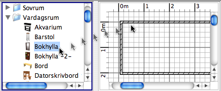

| Lägga till dörrar, fönster och möbler | |||
Dra och släpp en eller flera möbler från katalogen för att lägga till dem i din planlösning eller möbellista.  Du kan också välja några möbler i katalogen och sedan välja Möbler > Lägg till i hemmet eller klicka på Lägg till i hemmet-verktyget.
När möbler släpps i möbellistan eller läggs till med menyn Möbler > Lägg till i hemmet är det övre
vänstra hörnet på punkten (0, 0). Möbler som läggs till i hemmet markeras och ritas upp i möbellistan, i planlösningen och i 3D-vyn samtidigt. Under tiden som 3D-modellen laddas kommer dessa möbler visas som en vit ruta i 3D-vyn |
|